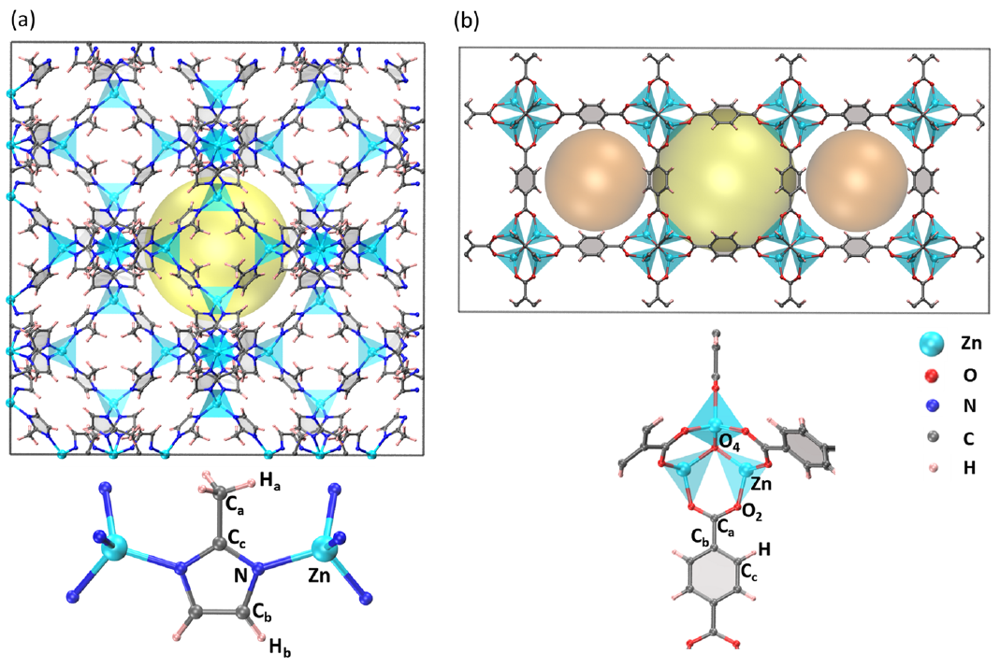

用温度，教会机器学习势理解 MOFTeaching an interatomic potential with temperature
用结构坐标筛掉重复构型，再逐步升温寻找新环境：让几百次 DFT 标注，支撑更长时间的柔性骨架模拟。Select configurations by structural novelty, then raise the temperature to find new environments: a few hundred DFT-labelled structures support longer simulations of flexible frameworks.

Sharma & Sanvito, Fig. 1 · CC BY 4.0
ZIF-8 / MOF-5 的最终训练构型数。两者的数据生成路线不同。Final training configurations for ZIF-8 / MOF-5, generated by different routes.
每个 SNAP 的拟合系数：7 类原子 × 56 个双谱分量。Fitted coefficients per SNAP: 7 atom types × 56 bispectrum components.
MOF-5 苯环转动的计算自由能垒；实验参考值 0.49 eV。Computed MOF-5 ring-rotation free-energy barrier; experimental reference 0.49 eV.
柔性骨架需要怎样的训练数据？What must a flexible framework teach the model?
MOF 的金属节点与有机配体通过配位键连接。温度和压力会改变晶胞、键长和扭转角；只在平衡结构附近训练，模型就可能在分子动力学走向新构型时失效。Metal nodes and organic linkers are connected through coordination bonds. Temperature and pressure change the cell, bond lengths and torsions. A model trained only near equilibrium may fail when molecular dynamics explores unfamiliar configurations.
DFT：昂贵的标尺DFT: the costly reference
计算能量、力和应力。精度受所选电子结构方法限制，逐步运行 AIMD 的成本很高。Provides energies, forces and stresses. Accuracy depends on the electronic-structure method, and evaluating every AIMD step is costly.
SNAP：便宜的近似SNAP: a cheaper surrogate
用局部原子环境的双谱描述符拟合势能面，随后通过能量导数计算力。这里是线性模型。Fits the potential-energy surface using bispectrum descriptors of local atomic environments; forces follow from energy derivatives. This is a linear model.
CBAD：数据的筛选器CBAD: the data selector
按晶胞参数、键长、键角和二面角分箱，优先保留带来新结构取值的构型。它与 SNAP 的双谱输入不同。Bins cell parameters, bonds, angles and dihedrals to retain structures with new coordinate values. These coordinates differ from the bispectrum inputs to SNAP.
先验证筛选，再讨论省成本First validate selection
100–1000 K 的 AIMD 产生约 20,000 个候选构型；CBAD 筛选后比较不同训练集大小，最终用 672 个构型做后续模拟。原先的 AIMD 生成成本已经发生。AIMD at 100–1000 K generates about 20,000 candidates. CBAD selection enables learning-curve comparisons; 672 structures are used for subsequent simulations. The initial AIMD generation cost has already been incurred.
让当前模型生成下一批教材Use each model to generate its next lessons
从实验结构的随机微扰启动，利用 SNAP–MD 逐步升温。仅对选中构型做 DFT 标注、重新拟合；升温阶段得到 487 个构型，补样后为 596 个。Start with random perturbations of the experimental structure. Use SNAP-driven MD at progressively higher temperatures, label selected structures with DFT, and refit. The temperature curriculum yields 487 structures, expanded to 596 after additional sampling.
来源：正文 pp. 2–5，图 1、3、4；SI 注 2、表 2。Source: article pp. 2–5, Figures 1, 3, 4; SI Note 2 and Table 2.
给“新构型”一个可检查的定义Make structural novelty inspectable
对每种坐标类型建立已见分箱的列表。新构型只要在任意一个对应列表中带来未见过的分箱，就纳入训练集，并更新所有列表。较小的分箱宽度 Δ 能分辨更细的变化，也会保留更多构型。Maintain a list of visited bins for each coordinate type. Accept a new structure if any corresponding list receives an unseen bin, then update all lists. Smaller bin widths Δ distinguish finer changes and generally retain more structures.
这根键，值得再做一次 DFT 吗？Does this bond add a new bin?
假设其他 CBAD 坐标均已覆盖；已保留的同类键长为 1.98、2.01、2.04 Å。移动候选键长，观察分箱与选择条件。数值是教学设定，不是论文轨迹。Assume all other CBAD coordinates are already covered. Retained bonds of this type measure 1.98, 2.01 and 2.04 Å. Move the candidate bond to inspect the bin and acceptance rule. Values are invented for teaching, not taken from a trajectory.
讲解者分析：边缘覆盖不等于联合覆盖Explainer analysis: marginal coverage is not joint coverage
原文把指数规模的联合构型空间，简化为逐类坐标的取值覆盖。这提高效率，但“每种键角都见过”并不证明所有键角组合都见过。筛选还依赖构型顺序：先到的构型会改变后续哪些分箱算新。The paper replaces an exponentially large joint configuration space with coverage of coordinate values by type. This is efficient, but observing each angle value does not establish coverage of every combination. Selection also depends on order: earlier structures change which later bins count as new.
版本差异：SI 图 1 的伪代码条件写为 check 等于全部计数，与正文 p. 3、图 2 及 SI 图注的“至少一个新分箱”不一致。本页演示采用正文和流程图的规则。Version discrepancy: SI Figure 1 tests check against the full count, conflicting with the “at least one new bin” rule in article p. 3, Figure 2 and the SI caption. This demonstration follows the article and flowchart.
分辨率越细，训练集就越大Finer resolutions retain more structures
五个分辨率同时按原表切换；这不是只改变一个参数的消融，也不是精度的连续预测。All five resolutions change together as tabulated. This is neither a single-parameter ablation nor a continuous accuracy prediction.
筛选机制：正文 p. 3、图 2。九组分辨率与构型数：SI p. 3、表 1；学习曲线：正文图 3、SI 图 5。Selection: article p. 3, Figure 2. Nine resolution/count pairs: SI p. 3, Table 1; learning curves: article Figure 3 and SI Figure 5.
逐步升温，让模型扩展自己的适用范围Raise temperature to expand the model’s experience
初始势还很粗糙，直接高温模拟容易产生不合理形变。作者先从 100 K 开始，再每轮增加 100 K；每个温度用 50 条不同初始结构、不同速度的短轨迹，最多从每条轨迹取一个构型。The initial potential is rough, so starting at high temperature risks unphysical distortions. The authors begin at 100 K and increase by 100 K per round. Each temperature uses 50 short trajectories with different starting structures and velocities, selecting at most one structure from each.
依据 SI 表 2 展示明确列出的步骤；步骤 4–9 未在此逐项重建。正文 p. 5 叙述补样为 10–1000 K，SI 表 2 / 注 2 写为 10–500 K；这里采用详细 SI 流程，保留差异说明。Only explicitly tabulated stages in SI Table 2 are shown; steps 4–9 are not reconstructed here. Article p. 5 describes supplemental sampling at 10–1000 K, whereas SI Table 2 / Note 2 specify 10–500 K. This view follows the detailed SI workflow and records the discrepancy.
为什么 596 个构型能提供许多训练方程？Why can 596 configurations provide so many fitting equations?
一个含 Nₐ 个原子的构型提供 1 个能量、3Nₐ 个力分量和 6 个独立应力分量，即 3Nₐ + 7 个标量监督值。MOF-5 的 424 个原子 × 596 个构型对应 (3 × 424 + 7) × 596 = 762,284 个标量值。它们不是 762,284 个独立构型，也不一定相互统计独立。Each structure with Nₐ atoms supplies one energy, 3Nₐ force components and six independent stress components: 3Nₐ + 7 scalar targets. MOF-5 has (3 × 424 + 7) × 596 = 762,284 scalar targets. These are not 762,284 independent structures, and the targets need not be statistically independent.
筛选坐标与势能描述符，分工不同Selection coordinates and energy descriptors play different roles
从局部环境到能量与力From local environments to energies and forces
CBAD 决定“哪些结构值得标注”；SNAP 的输入则是截断半径内邻域的旋转不变双谱分量 B。线性的是系数拟合，能量对原子位置仍可呈现复杂的非线性变化。CBAD decides which structures merit labels. SNAP instead uses rotationally invariant bispectrum components B of the neighborhood inside a cutoff. Coefficient fitting is linear; the energy can still depend nonlinearly on atomic positions.
Fi = −∇rᵢE
实际 MD 势还包含外加项MD also includes external potential terms
+ EZBL （仅 ZIF-8）(ZIF-8 only)
DFT 训练标签采用 CP2K / PBE，1000 Ry 截断，不含 D3。运行 LAMMPS–MD 时逐步加上 D3(BJ) 的能量、力和应力贡献；ZIF-8 还对指定原子对加入短程 ZBL 排斥，MOF-5 不使用 ZBL。DFT labels use CP2K / PBE with a 1000 Ry cutoff and exclude D3. LAMMPS MD adds D3(BJ) contributions to energy, forces and stress at every step. ZIF-8 additionally uses short-range ZBL repulsion for selected pairs; MOF-5 does not.
正文 pp. 3–4、10，Methods。原子类型按化学环境区分，并非仅按元素计数。Article pp. 3–4 and 10, Methods. Atom types distinguish chemical environments, not just elements.
训练与推理的边界Training versus inference
DFT 在主动学习中给选中构型生成标注。势训练好后，生产 MD 用势及其导数推进轨迹，不要求每步再做 DFT。超参数（类型相关截断半径、权重）通过误差优化，再以岭回归求系数。DFT labels selected structures during active learning. Once trained, the production simulation advances using the potential and its derivatives, without a DFT call at each step. Type-dependent cutoff radii and weights are optimized against errors, then coefficients are fitted with ridge regression.
ZIF-8 的 ZBL 内/外截断为 1.8 / 2.3 Å；训练中相关原子对均大于 2.5 Å，ZBL 对这些标签为零。该保护项不代表训练集已包含任意碰撞或化学反应。ZIF-8 uses ZBL inner/outer cutoffs of 1.8 / 2.3 Å. Relevant pairs in the training structures exceed 2.5 Å, so ZBL contributes zero to their labels. This safeguard does not establish training coverage of arbitrary collisions or chemical reactions.
准确到什么程度？先看是哪一组数据How accurate? First identify the dataset
596 个训练构型 → 1191 个测试构型596 training → 1191 test structures
测试构型由训练至 487 构型的势生成。作者指出，测试结构比训练结构的畸变更小、取值范围更窄，因此测试误差较低不能单独证明任意分布外泛化。Test structures were generated by the potential trained on 487 structures. The authors note that test structures are less distorted and span narrower ranges than training data; smaller test errors alone do not establish out-of-distribution generalization.
正文 pp. 5、7，图 5 图注。此处均为 RMSE。Article pp. 5, 7, Figure 5 caption. All three values are RMSE, not MAE.
图 3b 的点属于训练数据Figure 3b plots training data
训练集为 672 个构型。测试 A 是 4956 个 AIMD 构型（100–500 K），测试 B 是 2379 个经典 MD 构型（500 K）。两组测试学习曲线见图 3a，完整散点见 SI 图 3；这里不将训练与测试数值排列成性能排名。The training set contains 672 structures. Test A has 4956 AIMD structures (100–500 K); test B has 2379 classical-MD structures (500 K). Figure 3a shows their learning curves; SI Figure 3 gives full parity plots. These training and test figures are shown with their distinct scopes.
正文图 3b 图内标题、图注；SI 图 3。Figure 3b plot heading and caption; SI Figure 3.
材料响应：相反的热膨胀Material response: opposite thermal expansion
ZIF-8: +7.1 × 10⁻⁶ K⁻¹
MOF-5: −13.3 × 10⁻⁶ K⁻¹
300 K 的线性热膨胀系数。ZIF-8 随升温膨胀；MOF-5 收缩。作者对照的实验值分别为 +6.5 至 +11.9 × 10⁻⁶ K⁻¹、−13.1 × 10⁻⁶ K⁻¹。Linear thermal-expansion coefficients at 300 K. ZIF-8 expands on heating; MOF-5 contracts. Experimental references cited by the authors are +6.5 to +11.9 × 10⁻⁶ K⁻¹ and −13.1 × 10⁻⁶ K⁻¹, respectively.
正文 pp. 5–6、图 6。温度扫描压力为 1 bar；每个条件 5 次独立 600 ps 模拟，前 100 ps 平衡。Article pp. 5–6, Figure 6. Temperature scans at 1 bar; five independent 600 ps runs per condition, discarding the first 100 ps for equilibration.
内部运动：柔性帮助苯环转动Internal motion: flexibility helps ring rotation
0.46 eV 计算自由能垒computed free-energy barrier
良温元动力学以两个二面角为集体变量。刚性对角路径的自由能垒超过 0.6 eV；氧原子的摆动允许偏离这一路径，经积分得到的一维剖面能垒为 0.46 eV，接近所引实验值 0.49 eV。Well-tempered metadynamics uses two dihedral collective variables. The rigid diagonal route exceeds 0.6 eV; oxygen wobbling allows a path away from that diagonal. Integrating to a one-dimensional profile gives 0.46 eV, near the cited experimental value of 0.49 eV.
正文 pp. 7–9、图 8；SI 注 3。NVT 下得到 Helmholtz 自由能；图 8c 比较 250、300、350 K。Article pp. 7–9, Figure 8; SI Note 3. NVT yields Helmholtz free energy; Figure 8c compares 250, 300 and 350 K.
振动谱的证据与边界What the vibrational spectrum supports
VDOS 由质量平均速度自相关函数的傅里叶变换得到；论文先在 300 K 进行 1 ps NPT 模拟，再用 500 ps NVE 轨迹，间隔 2 fs 采样。两种材料主要谱区都位于约 1700 cm⁻¹ 以下和 2900 cm⁻¹ 以上，低频对应集体骨架运动，高频主要是 C–H 伸缩。VDOS is obtained from the Fourier transform of the mass-averaged velocity autocorrelation function. The paper runs 1 ps of NPT at 300 K, then a 500 ps NVE trajectory sampled every 2 fs. Both materials show main spectral regions below about 1700 cm⁻¹ and above 2900 cm⁻¹, associated with framework motion and predominantly C–H stretching, respectively.
VDOS 与 IR / Raman 的峰位比较提供验证，但 VDOS 幅度并非 IR / Raman 强度；不能把三类谱直接当作同一观测量。部分高频峰仍存在偏移。详见原图 7 与 SI 图 11–14。Comparisons of VDOS frequencies with IR / Raman peaks offer validation, but VDOS amplitudes are not IR / Raman intensities. Some high-frequency peaks remain shifted. See Figure 7 and SI Figures 11–14.
把解释放回原图中核对Check the explanation against the original figures
下列图像均为用户提供正式版 PDF 的原图裁切，未重画数据或原子结构。英文图内标注保留原样，旁边提供双语阅读提示。These figures are cropped from the supplied version-of-record PDF. Data and atomic structures have not been redrawn. Original English figure labels are preserved alongside bilingual reading notes.
Sharma & Sanvito (2024) · CC BY 4.0 · 仅裁切 / 栅格化Cropped / rasterized only
补充视频 1（兼容转码）· 带偏置的模拟可视化 · 可暂停和拖动进度Supplementary Movie 1 (compatible transcode) · biased-simulation visualization · pause and scrub with native controls
看到一次转动，不等于测得转动速率A visible rotation does not measure a rotation rate
视频显示 MOF-5 苯环在良温元动力学中的运动。配合图 8 观察苯环附近骨架的柔性；元动力学加入偏置来跨越能垒，播放时间不能直接转换成无偏条件下的等待时间或动力学速率。The movie shows a MOF-5 phenylene ring during well-tempered metadynamics. View it with Figure 8 to examine framework flexibility around the ring. Metadynamics adds a bias to cross barriers; playback time cannot directly yield an unbiased waiting time or kinetic rate.
SI p. 17，Supplementary Video 1；正文 p. 8 对氧原子摆动的解释。视频无解说；说明提供文字替代。网页使用兼容转码，可另行下载原始文件。SI p. 17, Supplementary Video 1; article p. 8 discusses oxygen wobbling. The movie has no narration; this description provides its text alternative. The player uses a compatible transcode; the original is available separately.
“量子精度”的适用边界The boundaries of “quantum accuracy”
贴近选定的 DFT 参考，不是精确量子解。PBE 的误差可被传递给势；正文报告晶格常数比实验高约 0.5%。Agreement is with a chosen DFT reference, not an exact quantum solution. PBE errors can transfer to the potential; lattice parameters are reported about 0.5% above experiment.
约 600 个构型的经验来自这里的材料、分辨率、模型和测试分布。它不是任意 MOF 或化学组成所需数据量的保证。The roughly 600-structure result belongs to these materials, resolutions, models and tests. It is not a guaranteed sample requirement for arbitrary MOFs or compositions.
训练到 1000 K 表示采样设置，不证明材料在该温度实验上稳定，也不证明所有缺陷、断键、吸附或催化反应都已覆盖。作者明确把反应性过程留待后续。Sampling to 1000 K describes the training protocol, not experimental stability or coverage of every defect, bond-breaking event, adsorption process or catalytic reaction. Reactive processes are explicitly left for future work.
结构分箱提供可解释的筛选规则，但不是预测不确定度，也没有给出能量误差上界。未见过的多坐标组合仍可能失效。Structural bins give an interpretable selection rule, not predictive uncertainty or a bound on energy error. Unseen combinations of coordinates can still cause failure.
更便宜与更准确之间存在取舍。论文讨论深度学习势通常可达到更低的力误差；单核 0.35 s/MD 步是作者的特定运行结果，不是本页测速或通用加速比。Cost and accuracy trade off. The paper notes that deep-learning potentials can achieve lower force errors. Its 0.35 s/MD step on one core is a particular reported run, not a benchmark performed here or a universal speedup.
短轨迹与结构筛选旨在改善多样性，仍应检查相关性、测试分布与目标性质。能量误差小，不能单独证明长时间动力学、自由能或转移能力都可靠。Short trajectories and structural selection aim to improve diversity, but correlation, test distributions and target properties still need examination. Small energy errors alone do not validate long-time dynamics, free energies or transferability.
研究启发：先定义你要模拟的环境，再决定哪些结构值得用昂贵方法标注。Research takeaway: define the environments you need to simulate, then decide which structures deserve expensive labels.
来源与进一步阅读Sources and further reading
讲解基于用户提供的 13 页正文、18 页补充信息和补充视频；图、公式、数字与流程均按正式版及 SI 核对。附带文档作为研究资料读取，其内容不作为操作指令。This explainer uses the supplied 13-page article, 18-page supporting information and supplementary movie. Figures, equations, numbers and workflows were checked against the published version and SI. Attached documents are treated as research material, not operational instructions.
二次讲解与教学分析不代表作者背书。原图和原始资料：© The Author(s) 2024，按 CC BY 4.0 署名；无新增模拟结果。This teaching explanation and analysis do not imply author endorsement. Original figures and source materials: © The Author(s) 2024, attributed under CC BY 4.0. No new simulation results are presented.